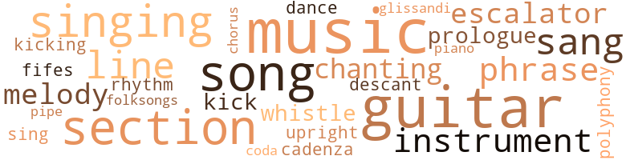
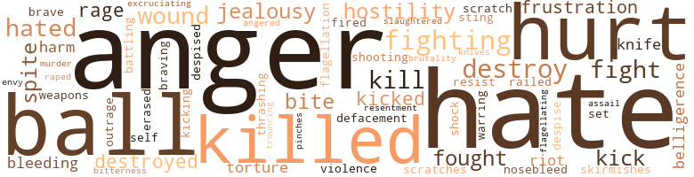
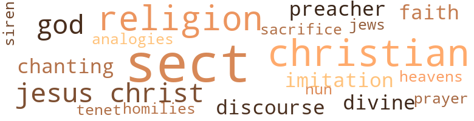

Triton, by Delany, Samuel R. (1976)
98 music-related terms matched in this text.
Most frequent terms in this topic: music (14); guitar (12); song (8); section (8); singing (7)
cadenza.n.01
Definition: a brilliant solo passage occurring near the end of a piece of music
| word | sentence |
|---|---|
| cadenza | Finally , he contented himself with evolving a sort of sexual cadenza , a series of caresses , acts , positions , of mounting intensity , to perform with her when they should return to her room - and in a lazy moment when no one was talking to her , he turned to mouth against her ear : " Come ... let me take you . " |
chorus.n.01
Definition: any utterance produced simultaneously by a group
| word | sentence |
|---|---|
| chorus | kept playing in her mind , like the chorus of a song whose verses were whatever bit of destruction her drug-dilated pupils managed to focus on behind the gauzy glare . |
dance.n.01
Definition: an artistic form of nonverbal communication
| word | sentence |
|---|---|
| dance | Elsewhere , another critic has said : ' Her works do not so much begin and end ; rather , they suddenly push familiar objects , emotions , and actions , for often as little as a minute or less , into dazzling , surreal luminescence , by means of a consortment of music , movement , speech , lights , drugs , dance , and decor . ' |
descant.n.01
Definition: a decorative musical accompaniment (often improvised) added above a basic melody
| word | sentence |
|---|---|
| descant | The woman on the rope began a high descant oversoaring the melody . |
escalator_clause.n.01
Definition: a clause in a contract that provides for an increase or a decrease in wages or prices or benefits etc. depending on certain conditions (as a change in the cost of living index)
| word | sentence |
|---|---|
| escalator | So , for the rest of the lunch-hour ( he realized what he 'd been doing two minutes before it was time to go back to work ) , he asked her about the Spike , the theater commune , some more about the Spike - not really , he pondered as they rode down the escalator to the Metalogics Department in the second subbasement , the way to get things off on the proper foot . |
| escalator | Over the next few days , though they went to sumptuous restaurants , took long trips in mechanical conveyances through endless , dark tunnels , even went to several symphonic concerts , and spent one afternoon at a museum in which they were apparently the only visitors ( the collection was a private one ; they had come up from some deep level in an escalator ; at night they returned down to their separate , sumptuous rooms by different escalators ) , Bron had the feeling that they had not really left the Earth space-port complex . |
| escalators | Over the next few days , though they went to sumptuous restaurants , took long trips in mechanical conveyances through endless , dark tunnels , even went to several symphonic concerts , and spent one afternoon at a museum in which they were apparently the only visitors ( the collection was a private one ; they had come up from some deep level in an escalator ; at night they returned down to their separate , sumptuous rooms by different escalators ) , Bron had the feeling that they had not really left the Earth space-port complex . |
fife.n.01
Definition: a small high-pitched flute similar to a piccolo; has a shrill tone and is used chiefly to accompany drums in a marching band
| word | sentence |
|---|---|
| Fifes | " I mean , " she said , stopping by a room door , and glancing back at him , " it 's awfully nice of Three Fifes to take us in at all - the company 's got men and women in it , of all persuasions . |
finale.n.01
Definition: the closing section of a musical composition
| word | sentence |
|---|---|
| coda | But if the initial encounter had been theatrical prologue , how would he know the answer he got were not some equally theatrical coda ? |
folk_song.n.01
Definition: a song that is traditionally sung by the common people of a region and forms part of their culture
| word | sentence |
|---|---|
| folksongs | " Or , for that matter , a long-haired young lady who sits around and tinkles folksongs . " |
glissando.n.01
Definition: a rapid series of ascending or descending notes on the musical scale
| word | sentence |
|---|---|
| glissandi | ( From inside the room came the familiar clicks , electric viola glissandi , and single piano notes , spaced with - resonating silences . ) |
guitar.n.01
Definition: a stringed instrument usually having six strings; played by strumming or plucking
| word | sentence |
|---|---|
| guitar | In the hall , somebody was playing the guitar . |
| guitar | protested gruffly ; a guitar tinkled ; the same man laughed ; more drawers ; then her own voice saying in the midst of a giggle ( that made him sway back from the door , then touch it , then let his gloved fingers fall again , still moving ) , " Come on now , come on ! |
| guitar | The guitar started . |
| guitar | " ... the song was written by our guitarist , Charo ... " ( who 's guitar face flashed in Bron 's eyes as it went into its case ; Charo grinned at the swingers . ) |
| guitar | I know you - " to the Spike , who was leaning , affectionately , against him , " and Windy , and that woman who plays the guitar , must have something going . |
| guitar | " So we 've noticed , " said that woman who played the guitar , with a slightly mocking smile ( reminiscent of the Spike 's ) that bothered him slightly because , till then , he had n't noticed Charo was holding the Spike 's other hand . |
| guitar | - which began an infinite regress of pleasure , only interrupted as she took his wrist now and pulled him around a corner : In the small square , a refuse can blazed , flaking light over the dark-haired girl 's guitar ; she turned , strumming slowly . |
| guitar | On one of the heaps , a woman , bare back to them , sat on a crate playing a guitar . |
| guitar | The playing stopped , Charo stood , crab-walked down toward Bron , holding the guitar by the neck . |
| guitar | He ducked his head , grinned , as Charo took his arm , the guitar swinging from her other hand . |
| guitar | " Please ... Thank you - " Which was when he noticed that all of them - the girl with the guitar , the woman on the rope , the still panting acrobat , the woman sitting on the crate with the baby , the matted-haired woman with the scars and that eye , and the other dozen around the extinguished can ( a sooty trickle of smoke put a second vertical up beside the rope ) - were watching him . |
| guitar | A girl not much older than Prynn was sitting on a table corner playijig her guitar . |
intonation.n.03
Definition: the act of singing in a monotonous tone
| word | sentence |
|---|---|
| chanting | There was only the quiet chanting of the woman on the rope , her voice measured , her eyes fixed on Bron 's : " ... five , nine ... two ... six ... one ... seven ... five ... " Bron clapped again , alone , and realized tears were rolling one cheek . |
kick.v.04
Definition: kick a leg up
| word | sentence |
|---|---|
| kicking | The metal door was dull-gray , with scuffs and scratches at ... kicking level ! |
| kick | And if you try to follow me , I 'll kick you in the balls . " |
| kick | And if you do n't , I 'll kick you in the balls . |
music.n.01
Definition: an artistic form of auditory communication incorporating instrumental or vocal tones in a structured and continuous manner
| word | sentence |
|---|---|
| music | Frequently , her brief , elliptical , and intense works have been compared to the music of the twentieth-century composer Webern . |
| music | Elsewhere , another critic has said : ' Her works do not so much begin and end ; rather , they suddenly push familiar objects , emotions , and actions , for often as little as a minute or less , into dazzling , surreal luminescence , by means of a consortment of music , movement , speech , lights , drugs , dance , and decor . ' |
| music | He was sure Alfred enjoyed roaming in the many meeting places with their loud music , their low lights , enjoyed being eyed by women , being engaged in conversation by them ( or perhaps Alfred did the , engaging . |
| music | And is the music hired ? |
| music | No , it 's by their two oldest daughters , who 're just terribly creative when it comes to things like music and cooking and automotive physics . |
| music | The music was complete cacophony . |
| music | In one of the larger , more opulent , mobile rooms , with luxurious reclining chairs on its several , carpeted levels , there were more drinks , more music , more conversation ... " This is all marvelous , Sam ! " someone called out . |
| music | The music ( the acrobat preceding them did a final flip and , staggering and laughing , stood ) quickened . |
| music | In the lulls between rushing grass and voices , the music reached them , slow and expert , lazily hauled from seventh to archaic seventh . |
| music | Her singing voice sounded as familiar as the music sounded strange . |
| music | ( The man was walking away ) " By the way , the music for our production was written by our guitarist , Charo - " The dark-haired girl , pulling up the cloth case around her instrument , paused , smiled at Bron , then zipped it closed . |
| music | Have been swept up by a traveling music commune and would you believe that all of us one night after how many hundreds of hours ' meditation and rehearsal simultaneously had a religious revelation that it was time to bring our music to others and so now we are singing for real people practically every night can you imagine with my voice but they seem to like it . |
| music | Have been swept up by a traveling music commune and would you believe that all of us one night after how many hundreds of hours ' meditation and rehearsal simultaneously had a religious revelation that it was time to bring our music to others and so now we are singing for real people practically every night can you imagine with my voice but they seem to like it . |
| music | It 's so nice to learn at my age that there are even more complex and elegant games than vlet dash though I will warmly welcome a game with you should the music of the spheres once again suspend us in the same chord . |
musical_instrument.n.01
Definition: any of various devices or contrivances that can be used to produce musical tones or sounds
| word | sentence |
|---|---|
| instrument | stood , her instrument high under her breasts , her head bent pensively , her left hand , far up the neck , clutching chord after chord ; the outsized muscle between thumb and forefinger on her right hand pulsed as her nails rattled notes into the corridor . |
| instrument | The man jerked the instrument away and looked at it . |
| instrument | The guitarist bent over her instrument , hammering on with her left hand and , with her right , flailing furious chords . |
| instrument | ( The man was walking away ) " By the way , the music for our production was written by our guitarist , Charo - " The dark-haired girl , pulling up the cloth case around her instrument , paused , smiled at Bron , then zipped it closed . |
phrase.n.02
Definition: a short musical passage
| word | sentence |
|---|---|
| phrase | That whole , opening gambit when you first froze me in - " which was ice farmer slang that had passed , by way of the ice opera , into general use : but , a moment out , as he recalled her origin , it seemed an affectation , and he wished the phrase back . |
| phrase | all onyx and dove-blood crinkling . . . " to miss a phrase and catch another : " ... love like an iced engine crackling ... " which , in terms of the dozen words he 'd first heard , was profound . |
| phrase | He caught the shrieked phrase : " ... mutilation of the mind ! |
| phrase | The wreckages kept sending her ill-focused memories of the Mongolian diggings ; somehow the phrase " The horrors of war . |
piano.n.01
Definition: a keyboard instrument that is played by depressing keys that cause hammers to strike tuned strings and produce sounds
| word | sentence |
|---|---|
| piano | ( From inside the room came the familiar clicks , electric viola glissandi , and single piano notes , spaced with - resonating silences . ) |
pipe.n.04
Definition: a tubular wind instrument
| word | sentence |
|---|---|
| pipe | But no matter what the order of your nucleotides , those perfect teeth can be marred by anything from a lack of calcium in the diet to a high acid/bacteria ratio in the mouth to a lead pipe across the jaw . |
polyphony.n.01
Definition: music arranged in parts for several voices or instruments
| word | sentence |
|---|---|
| polyphony | First he thought the song was breaking into polyphony . |
prologue.n.01
Definition: an introduction to a play
| word | sentence |
|---|---|
| prologue | But if the initial encounter had been theatrical prologue , how would he know the answer he got were not some equally theatrical coda ? |
| prologue | Well , he was n't really sure , but . . . Then they were leaving , Philip was still talking , and by now Bron , having become tired of her own annoyance and exhausted with pretending it was n't there , was morosely wondering if perhaps this was n't all some ineffably gentle prologue to getting fired - or at least a serious reprimand . |
rhythm.n.04
Definition: the arrangement of spoken words alternating stressed and unstressed elements
| word | sentence |
|---|---|
| rhythm | Who ( Bron gazed about the spectators clapping to the intense , insistent rhythm ) was the audience this time ? |
section.n.01
Definition: a self-contained part of a larger composition (written or musical)
| word | sentence |
|---|---|
| section | Outer Mongolia , this particular section of it used to be called . |
| section | He gestured toward the rocks , the sky , the falls , which ran under the transparent section of path they walked over ( moss , froth , and clear swirls of green passed beneath his black boots and her bare feet ) toward fanning columns of green glass that were the Craw 's entrance . |
| section | Some dozen diggers were clustered around one section ( the sun was not the yellow disk on the blue it was always pictured , but a boundaryless , white-gold blot you could n't really look at ) , but not the place , Bron decided at last , where the Spike had hidden her gauntlet . |
| section | In fact , there was a small earth-mover filling in that section . |
| section | A section of wall , and crumbled powdery stuff , had fallen across them . |
| section | For instance , there 's a gene that is activated on the Y that activates the production of androgen - actually parts of the androgen itself are designed along a section of the X chromosome - while another gene , which Y activates on the X , causes another gene , somewhere else entirely , to get the body up so it can respond to the androgen . |
| section | The point is , however , any little string of nucleotides they might isolate is really only a section of a very complicated interface , both internal and external . |
| section | It looks safe and close - like the roofed-over section of the u-l - yes , punctured by a star here and the sun there . |
sing.v.02
Definition: produce tones with the voice
| word | sentence |
|---|---|
| sang | The song she sang ( among the dozen others singing ) was beautiful . |
| sang | But what they sang - Bron felt his hand squeezed . |
| sang | The acrobat , legs braced wide , shoulders and long hair back , face up - sparse red beard scraggled just under his chin - sang too . |
| sang | Small-breasted Charo sang , dreamily , looking down at her fingers , under the white and gold sky : Hear the city 's singin ' like a siren choir . |
| sang | Charo sang : I 've been down to Parliament ; I 've been in school ; I 've been in jail and learned the Golden Rule ; I 've been in the workhouse - served my time in those hallowed halls . |
| Sing | " Sing a few songs , turn a few backflips : always happy and bright . " |
| singing | Have been swept up by a traveling music commune and would you believe that all of us one night after how many hundreds of hours ' meditation and rehearsal simultaneously had a religious revelation that it was time to bring our music to others and so now we are singing for real people practically every night can you imagine with my voice but they seem to like it . |
singing.n.01
Definition: the act of singing vocal music
| word | sentence |
|---|---|
| singing | The singing changed key and timbre . |
| singing | Some man started singing . |
| singing | The singing went on . |
| singing | ( Others had joined the singing . |
| singing | Charo was singing : I 've been in the Tundra and the mountain too ; I 've been in Paris , doin ' what the Frenchmen do , I 've been in Boston where the buildings grow so tall . |
| singing | The solo voice that you first heard singing was recorded by Jon-Teshumi . " |
song.n.01
Definition: a short musical composition with words
| word | sentence |
|---|---|
| song | Verbal disorientation , he thought , listening to the surreal catalogue of the lyrics : the melody was minor , this time rhythmic , more chant than song . |
| song | First he thought the song was breaking into polyphony . |
| song | " ... the song was written by our guitarist , Charo ... " ( who 's guitar face flashed in Bron 's eyes as it went into its case ; Charo grinned at the swingers . ) |
| song | Some of the people were swaying to the unseen singer 's song . |
| song | The song she sang ( among the dozen others singing ) was beautiful . |
| songs | " Sing a few songs , turn a few backflips : always happy and bright . " |
| song | Clapped again - had the song ended ? |
| song | Like lyrics of a song , he thought , running through your head , that , basically , you did n't like . |
| song | kept playing in her mind , like the chorus of a song whose verses were whatever bit of destruction her drug-dilated pupils managed to focus on behind the gauzy glare . |
tone.v.01
Definition: utter monotonously and repetitively and rhythmically
| word | sentence |
|---|---|
| chanting | She was chanting something ; he heard : " ... point seven , one ; eight , two , eight , one , four . |
| Chanting | ( You had to know something like seventeen before they let you attend Supervised Unison Chanting at the Academy . ) |
tune.n.01
Definition: a succession of notes forming a distinctive sequence
| word | sentence |
|---|---|
| line | He went ' this way , ' bumped his shoulder on the comer of the turnoff ; while he rubbed it , ahead a line of orange light opened beside Miriamne , sweeping her into broad-hipped silhouette . |
| lines | Tears ran , in three lines , down one cheek , in one down the other . |
| melody | Verbal disorientation , he thought , listening to the surreal catalogue of the lyrics : the melody was minor , this time rhythmic , more chant than song . |
| melody | The woman on the rope began a high descant oversoaring the melody . |
| melody | The tempo changed again , slowing to the melody he 'd first heard : Sometimes I wonder what I am . |
| line | If we are , I 'll dash up and get some - " " We are going someplace where someone as stunning as you may wear - " There was a ritual completion to the line : - anything you can afford , including my heart on your sleeve . |
| line | " This is a sort of all-purpose everything too , in the slide-rule/calendar line . |
| lines | Do I know my lines ? |
upright.n.02
Definition: a piano with a vertical sounding board
| word | sentence |
|---|---|
| upright | Dark streets , here and there slashed by a sodium light-tube set upright in a wall-holder ( the bottom few inches of most of them were completely grimed over ) , gave way to narrower alleys . |
whistle.n.01
Definition: the sound made by something moving rapidly or by steam coming out of a small aperture
| word | sentence |
|---|---|
| whistles | Outside , he heard a rushing with a few whistles in it - the wind again ! |
whistle.v.01
Definition: make whistling sounds
| word | sentence |
|---|---|
| whistle | But Sam asked something about his meld strategy and , when Bron explained , gave a complimentary whistle . |
154 violence-related terms matched in this text.
Most frequent terms in this topic: hate (7); anger (7); destroy (6); fighting (6); hurt (6)
abrasion.n.01
Definition: an abraded area where the skin is torn or worn off
| word | sentence |
|---|---|
| scratch | You know what he say 's to me , with this very concerned look , like you 've asked him to play one of his old thirty-three recordings , but he knows it 's got a scratch ? |
| scratches | The metal door was dull-gray , with scuffs and scratches at ... kicking level ! |
anger.n.01
Definition: a strong emotion; a feeling that is oriented toward some real or supposed grievance
| word | sentence |
|---|---|
| anger | He was trying to think of something to say , and already the anger at not finding it was battling his initial pleasure . |
| anger | The fear - some of it , anyway : - curdled ; and became anger . |
| Anger | Anger welled . |
| anger | Bron looked up , dragged a great breath in on top of his anger : it did nothing to relieve him . |
| anger | ... but it was just paint ) had lowered , projecting faint anger in that typically Martian way . |
| anger | That was ridiculous as the embarrassment and anger she had subjected herself to with that theater woman ! |
| anger | she thought on the edge of anger . |
| anger | And , holding both anger and the laughter back , she plunged again into the work . |
anger.v.02
Definition: become angry
| word | sentence |
|---|---|
| angered | you because : I was offended at your assumption that just because I was in the theater I would automatically like your homosexual friend : I was amused / angered at your insistence in talking about yourself all the time and at your amusement-to-anger that I should ever want to talk about me . |
attack.v.01
Definition: launch an attack or assault on; begin hostilities or start warfare with
| word | sentence |
|---|---|
| assail | And while we have our own emotional commitment to bolster us , these external prejudices assail us nevertheless , invariably presenting themselves in the guise of logic . |
battle.v.01
Definition: battle or contend against in or as if in a battle
| word | sentence |
|---|---|
| battling | He was trying to think of something to say , and already the anger at not finding it was battling his initial pleasure . |
belligerence.n.01
Definition: hostile or warlike attitude or nature
| word | sentence |
|---|---|
| belligerence | He looked at Miriamne ( with the ghost of belligerence playing through his smile ) : " Well , I guess we 've made our point - for what little it 'll do . " |
| belligerence | With varying amounts of belligerence , Bron complied to these requests ( to keep peace , he told himself at first ) , only to discover that , in his compliance , he valued the relationship - friendship , he corrected himself ( because he was thirty-seven , not seventeen ) . |
bleeding.n.01
Definition: the flow of blood from a ruptured blood vessel
| word | sentence |
|---|---|
| bleeding | Halfway up the steps to the next floor he saw that those dark blots on the carpet were blood - which either trailed up the steps or down , depending if the bleeding had been getting better or worse . |
| bleeding | Then , as suddenly , sureness ceased ; and she was left , on her side , shaken , with stuttering heart and breath , biting her bleeding lip , with a memory of something that now only seemed - But ... no , not if she had felt like that about it ; she had been sure ! ) |
brush.n.06
Definition: a minor short-term fight
| word | sentence |
|---|---|
| skirmishes | Follow me all the way from Triton , braving border skirmishes and the danger of battle to reach my side ? |
butcher.v.01
Definition: kill (animals) usually for food consumption
| word | sentence |
|---|---|
| slaughtered | - and then slaughtered Bron three games running on his small-sized , traveling vlet board ; mercifully , no game took more than forty minutes . |
contemn.v.01
Definition: look down on with disdain
| word | sentence |
|---|---|
| despise | Her gaucheries , enthusiasms , and eccentricities simply had nothing to do with his own early visits to the Craw 's Bellona brothers - for one thing , she simply did not despise him the way he had despised those who had escorted him there , so that , in the game of dazzling and impressing in which he was busily racking up points , she was just not playing . |
| despised | Her gaucheries , enthusiasms , and eccentricities simply had nothing to do with his own early visits to the Craw 's Bellona brothers - for one thing , she simply did not despise him the way he had despised those who had escorted him there , so that , in the game of dazzling and impressing in which he was busily racking up points , she was just not playing . |
defacement.n.01
Definition: the act of damaging the appearance or surface of something
| word | sentence |
|---|---|
| defacement | Against the normally melting hues , it was hard to tell which was booth and which was defacement ; the only thing that made him sure was the legend above the entrance ( only " your " and half of " society " showed ) , splotched out with red splatter . |
destroy.v.04
Definition: put (an animal) to death
| word | sentence |
|---|---|
| destroyed | And kept writing him letters till he wrote me back - you see , one of my friends had said : ' You know , you 've destroyed his life . |
| destroy | I 'll know how to leave it alone enough not to destroy it , and at the same time to know what I can do . |
| destroyed | Another Art Department memo : As the sculpture had been completed , three artists from a rival school , masked in turquoise but otherwise nude , had rushed into the cafeteria and , with flamers , destroyed the work , charring and melting the plates . |
| destroy | She raised her hand tentatively toward his face , then shrieked : " I shall destroy you ! " |
| destroy | She clawed at his gold brow , hissing : " I shall destroy you , destroy you , do you hear ! " |
| destroy | She clawed at his gold brow , hissing : " I shall destroy you , destroy you , do you hear ! " |
| destroy | " I shall destroy you - as you destroyed me ! " |
| destroyed | " I shall destroy you - as you destroyed me ! " |
| destroy | And anyway , it does n't bother anyone , though I 'm sure it would just destroy him if he found that out . " |
envy.n.01
Definition: a feeling of grudging admiration and desire to have something that is possessed by another
| word | sentence |
|---|---|
| envy | But then Philip was touch-ish with all the female employees , Bron had noted before , sometimes with envy , sometimes with annoyance . |
erase.v.01
Definition: remove from memory or existence
| word | sentence |
|---|---|
| erased | During all this , Bron took erasable writing slates out of bis drawer , erased some , put them in other drawers , realized he had put them in the wrong drawers , kept smiling , briefed her on the Day Star project ( with an explanation that , by the time he was halfway through it he realized , she could n't possibly follow because it was simply incoherent , finished it anyway , and discovered she 'd followed a good deal more of it than he 'd thought ) , learned that when she 'd been hired , she 'd been told pretty certainly that she would not end up in her own field but , with things in the economic state they were in , you had to make do with what you could get . |
ferociousness.n.01
Definition: the trait of extreme cruelty
| word | sentence |
|---|---|
| brutality | The last brutal intellectualizing he 'd done of any sort was his attendance at the Temple of the Poor Children of the Avestal Light and Changing Secret Name ; brutality was just not what he was into . |
fight.v.02
Definition: fight against or resist strongly
| word | sentence |
|---|---|
| fight | " But what I was saying : You 'd be surprised how many people do fight that moment of freedom , even with the drug boost , for the whole minute and forty-nine seconds the piece takes to perform ! |
| fight | You did n't fight it ; you went with it . |
| fighting | Makes you wonder what we 're doing fighting on the same side , do n't it ? " |
| fighting | " Well , at least - " ( From the voice , Bron thought for a moment it was Windy : it was an earthie with a beard and lots of rings , in his ears and on his fingers ) " - no one 's fighting it with soldiers . " |
| fighting | " Now wait - we 're not fighting this war with soldiers : there 's no reason to start using actors and archeologists . " |
| fought | Some negative emotion fought for ascendance . |
| fought | As the woman stepped forward , he fought back and , for the moment , won . |
| fight | You may fight over which one of you deserves which . " |
| fighting | The emotion Bron had been fighting down suddenly surged . |
| fight | The Spike had said something , before they 'd started to fight , about giving him the astrolabe . |
| fight | But - the least offense , still , maybe it 's the fatal straw on the back of the camel - having to fight somebody off physically who wants to make out with you when you do n't want to is something I had a fair amount of tolerance for when I was twenty ( and how many times did it happen to me then ? |
| fighting | And fighting him off physically ? |
| fighting | Outside the group , people were shouting and . . . fighting with the mumblers at the group 's edge ! |
| fought | He coughed : " - won this afternoon was fought to preserve that inviolability . |
| fought | But then , I suppose ... " Bron laughed at the ground , then looked up : they 'd just left the Plaza - " that 's the right we just fought a war to defend . |
flagellate.v.01
Definition: whip
| word | sentence |
|---|---|
| flagellating | Why am I lying here , flagellating myself with guilt ? |
flog.v.01
Definition: beat severely with a whip or rod
| word | sentence |
|---|---|
| trouncing | As Bron walked down the corridor toward his room , he decided warmly that the trouncing he had given the old pirate , even if it had taken Sam 's help to do it , had made the evening worth it . |
frustration.n.03
Definition: a feeling of annoyance at being hindered or criticized
| word | sentence |
|---|---|
| frustration | Still , it made him feel rather romantic ... if he could just suppress the frustration . |
| frustration | He finished the last paragraph wondering harder and harder whether it was Charo or Windy she was talking to ( somehow it seemed important to know ) ; then the frustration suddenly overturned . |
| frustration | Some people , with looks of frustration , were starting to the right or left . |
fury.n.01
Definition: a feeling of intense anger
| word | sentence |
|---|---|
| rage | He felt , through the weakness and the hunger and the thirst and the fear and the rage , that he might weep . |
| rage | In the voice Bron heard edges both of hysteria and rage . |
| rage | Shaking with rage and embarrassment , Bron thought : How could a woman like that know what any one felt ! |
hate.v.01
Definition: dislike intensely; feel antipathy or aversion towards
| word | sentence |
|---|---|
| hated | He hated being a type . |
| hated | He 'd hated the job ; he was totally frustrated by the people . |
| hate | But the great lie those people hold out , whether they 're in a commune or a co-op - and this , I suppose , when all is said and done , is why I hate them - even the ones I like , like Audri ( who 's my other boss ) , is : Anyone can have it , be a part of it , bask in its radiance , and be one with the radiating element itself - oh , perhaps not everyone can have it at an address within shoulder-rubbing distance of London Point , but somewhere , someplace , it 's waiting for you ... if not in a family commune , then in a work commune like your theater company , if not in a commune , then at a ... well , a heterophilic co-op ; if not at a heterophilic co-op , then at a homophilic one . |
| hate | " I 'd hate to think what you 'd have said if you had n't ! |
| hate | " I 'd hate to have to take a swim too early . " |
| hated | He hated it . |
| Hates | " Hates the stuff himself . " |
| hated | Bron hated Sam . |
| hate | " I ca n't hate her , " Bron said . |
| hate | " Anymore than I could hate you . |
| hate | I mean , Tethys is such an awfully small city , I 'd just hate for any of this to get back to her . |
| hate | " Do n't hate me for that . " |
| hated | I hated you , I thought you were hardhearted , insensitive , ungenerous and pignoli-brained ; and quite the most beautiful , dashing , mysterious , and marvelous creature I 'd ever laid eyes on . " |
hostility.n.01
Definition: a hostile (very unfriendly) disposition
| word | sentence |
|---|---|
| hostility | Her sullen , preoccupied look had gone ; it had been replaced by one of muted , but clear , hostility . |
| hostility | Behind Bron 's smile , a haze of hostility , with him since they 'd entered the underpass , broke up , and drifted away . |
| hostility | One of the first things he did feel was the faint hostility ( Windy , who was really a pretty nice guy he decided , and Dian , who by the end of the evening was the nicest person , as far as he was concerned , in the company - with none of the Spike 's brittleness and a gentler way with her equally astute insights - pointed a few subtle examples of it out ) between the women who lived at the co-op and the commune who were leaving the next morning . |
| hostility | Lawrence clacked two dice back in place , reached for a third - " Hey . . . " Bron heard the hostility in the clack and tried to retrace what he 'd said to that point where it had been generated . |
hurt.v.04
Definition: cause damage or affect negatively
| word | sentence |
|---|---|
| hurt | And that would only hurt your feelings . |
indignation.n.01
Definition: a feeling of righteous anger
| word | sentence |
|---|---|
| outrage | He did not know if he 'd chosen that because it was the greatest outrage or the most miniscule . |
injury.n.01
Definition: any physical damage to the body caused by violence or accident or fracture etc.
| word | sentence |
|---|---|
| hurt | In my terms they 're my worst - because that 's when the hurt seems to be the most hopeless . |
| harm | " You were asking me before if being a prostitute had done me any harm . |
| hurt | - sit down and map out how I 'm managing to inflict a good deal of the hurt on myself . " |
| harm | Around them and in between them , Bron learned , from overhearing several other conversations and hovering about the edges of several more ( trying to think of a leading question , terrified of asking a stupid one ) , that while Sam had been keeping him off out of harm 's way in Mongolia , indescribable atrocities had occurred , unspeakable retaliations had been committed , and that , though no one could really be surprised , the " we " who were at war now was , yes , Triton . |
jealousy.n.01
Definition: a feeling of jealous envy (especially of a rival)
| word | sentence |
|---|---|
| jealousy | Bron ( like most people ) thought of jealousy as an irrational emotion . |
| jealousy | Primarily , though , it results from the peripitea 's invariably pivoting on sexual jealousy ; that 's just so hard for a contemporary audience to relate to . " |
| jealousy | Of the three explanations I could come up with , the most generous is that you thought she was involved with me and it was some weird sort of jealousy . |
| jealousy | I 'm green with jealousy ! " |
kick.v.04
Definition: kick a leg up
| word | sentence |
|---|---|
| kicking | The metal door was dull-gray , with scuffs and scratches at ... kicking level ! |
| kick | And if you try to follow me , I 'll kick you in the balls . " |
| kick | And if you do n't , I 'll kick you in the balls . |
kick_back.v.02
Definition: spring back, as from a forceful thrust
| word | sentence |
|---|---|
| kick | " As I told you before , if Bron treats you badly ... I 'm repeating this now because I do n't like saying things behind people 's backs - you kick him - " Philip raised his foot and swung his toe lightly against Bron 's calf ( Philip 's ankle was incredibly hairy ) - " right here . |
| kicked | The acrobat 's feet swayed wildly , kicked violently , regained balance . |
| kicked | I got her kicked out of her job this morning . |
| kicked | " You know - " The Spike 's arms were folded : she kicked at her hem as they walked - " there 's something I 've been trying to work into one of my productions since I got here ... I saw it happen the first day I arrived . |
| kick | I think we can all kick off early today . |
kill.v.10
Definition: cause the death of, without intention
| word | sentence |
|---|---|
| kill | I 'll kill her ! |
| kill | He smiled : I will kill her . |
| kill | I 'll kill her in some slow and lingering way that will hurt amazingly and unbelievably and continuously and will seem to have no source and take years . |
| killed | I suppose I 've had a secret urge to , ever since my name day ... I chose the name of a mother of mine I 'd never known , who 'd got killed in an ice-slide before I was born . " |
| kill | But you 'll kill me ! " |
| killed | " So this one is all buttons and spies and sobotage , and only civilians get killed - those that are n't thrown out of a job by the economic wangling , or do n't fall off the roof during a gravity cut - because that 's all there are . " |
| killed | Some of us were killed . |
| killed | Anything we might have said could have gotten one or all of us killed , just like that ! |
| kill | still does n't like to be touched , " and thought , as she took her place across from him , I did n't hear the pronoun , but if I had and it was ' he , ' I 'd kill him . |
| killed | He 'd been killed by a gravity dip , when a wall fell on him . |
| killed | - she was sure , sure for thirty-seven entire seconds ( each counted with a louder and louder heart-thud that finally blocked her throat with terror ) , sure in a way that implied volumes on the rotation of the planets , on the entropy of the chemistry in the sun itself ( moving and churning somewhere in the real universe beyond the sensory shield ) , sure with a surety which , if it were this subjectively complete must be objectivity ( and was n't that the reason why , her scrambling mind careened on , unable to stop even for the terror , that , in these ice - and rock-bound moons , the subjective was held politically inviolable ; and had n't they just killed three out of four , or five out of six , to keep it so - ? |
knife.n.02
Definition: a weapon with a handle and blade with a sharp point
| word | sentence |
|---|---|
| knife | It had something to do with walking into her seminar room on the first evening , three years or five years ago , and seeing one student who was wearing only a fur vest and a knife - strapped to his foot ; then there was something about a lot of drugs . |
| knife | The domo ran his paring knife around a ring of orange rind , of lemon peel : in with the praline , the sugar ; then the deft stripping of the white bananas , peel already baked black ; and , after a sprinkling of brandies and a tilting of the pan , a whooosh ! |
| knives | and felt her feelings rend as if knives turned in her liver . |
malice.n.01
Definition: feeling a need to see others suffer
| word | sentence |
|---|---|
| spite | Still ... of course he would go and fixate on someone practically famous ; though , in spite of Lawrence , he 'd never heard of her . |
| spite | A young woman ( the one with the glasses he 'd seen rubbing her eye on the road ; face and hands were much cleaner , but her clothes were just as dirty ) cupped her tea in both hands , dusty nails arched against the thick , white crock , and was saying to Charo , who balanced her chin on her knuckles : " I think it 's so wonderful that you people can come and be with us , in spite of this war . |
| spite | And I think it 's wonderful that in spite of it you can be here , with us , like this . |
| spite | " And I suppose I did , at least that night , love you in spite - " Bron 's frown became a scowl . |
murder.n.01
Definition: unlawful premeditated killing of a human being by a human being
| word | sentence |
|---|---|
| murder | If that happens and you have n't found a place by then , you can bunk in with me - till one or the other of us threatens murder . |
musket_ball.n.01
Definition: a solid projectile that is shot by a musket
| word | sentence |
|---|---|
| ball | Bron pushed open his own door and stepped into a dimly lighted room , with an oval bed ( that could expand to hold three : despite Alfred 's secretiveness , there was nothing in the co-op house rules that said you could n't ball as many people as you liked as long as you did it in your own room ) , a reader , a microfiche file drawer , a television screen and two dials below it for the seventy-six public channels and his three private ones , two windows ( one real , which looked out on the alley behind the building , the other a changeable , holographic diarama : blue curtains were drawn across both ) , clothes drawers , sink drawers , and toilet drawers in the wall , plastic collars here and there on the blue rug from which , at the push of a switch in the control drawer , inflatable chairs would balloon . |
| ball | not-P can cut off a small piece of P , or it can be a shape that pierces P like a finger through a ball of dough , sticking out both sides . |
| balls | The only thing I know is the blues got the world by the balls . |
| balls | And everywhere you look the blues got the world by the balls . |
| balls | You can catch 'em from the preacher , or from the pool shark , find 'em in the grammar of the socialite 's remark ; or down in the washroom you can read it on the walls : Everywhere you look the blues got the world by the balls . |
| balls | And if you try to follow me , I 'll kick you in the balls . " |
| balls | And if you do n't , I 'll kick you in the balls . |
nosebleed.n.01
Definition: bleeding from the nose
| word | sentence |
|---|---|
| nosebleed | " You know , last night , after the shield went off and you had your nosebleed , I almost knocked on your door to say hello , but I figured you - " " I wish you had , " Alfred said . |
open_fire.v.01
Definition: start firing a weapon
| word | sentence |
|---|---|
| fired | Your friend Miriamne thought the reason I 'd gotten her fired was because she had n't been interested when I 'd made a pass at her . |
pain.v.02
Definition: cause emotional anguish or make miserable
| word | sentence |
|---|---|
| hurt | I 'll kill her in some slow and lingering way that will hurt amazingly and unbelievably and continuously and will seem to have no source and take years . |
| hurt | I do n't think it hurt me in any way , at all . |
| hurt | " It 's supposed to hurt . " |
pinch.n.02
Definition: an injury resulting from getting some body part squeezed
| word | sentence |
|---|---|
| pinches | He opened the envelope by small pinches , unfolded the letter ( stamped across the top , in the same pink : GOVERNMENT FACSIMILE ) . |
rape.v.01
Definition: force (someone) to have sex against their will
| word | sentence |
|---|---|
| raped | And that was n't the answer either , because once on Mars ( it had been the night after his nineteenth birthday ) he had been raped , by a gang of five women with hard , metallic eyelids as banal as the lyrics to all the thousand ( orphan - ) Annie-shows that had spawned them , hell raising through the dawn-dim alleys of the Goebels and enraged by the symbol above his right eye ; and though , for a few months , he had actually fantasized sexually'about the one of the five who had n't ( actually ) taken part and ( for the first few minutes ) tried to stop the others , he 'd known even then that was just a strategy for salvaging something from a thoroughly unpleasant experience that had left him with a sprained thigh , a dislocated shoulder , and a punctured eardrum which ( in another world , at another time ) might have made him deaf in one ear for life . |
resentment.n.01
Definition: a feeling of deep and bitter anger and ill-will
| word | sentence |
|---|---|
| bitterness | " You do n't see any Terra Relief around , " the Spike said , suddenly , with the same bitterness Bron had heard in her comment to the man back on the transport platform . |
| resentment | Then , whenever she reached a situation even near one in which her womanhood was at stake , all that had been surpressed welled up in such a torrent she could not tell desperation from resentment , desire from need , making her blurt stupidities and nonsense instead of what , a moment before or a moment later , she would have known was rational response . |
resist.v.04
Definition: withstand the force of something
| word | sentence |
|---|---|
| resist | I 'm not trying to resist ! |
riot.n.01
Definition: a public act of violence by an unruly mob
| word | sentence |
|---|---|
| riot | The hair showing on the right of her head was a riot of green , gold , purple , and orange . |
| riot | " The flickering here was our domestic emergency power coming in ; and riot quite making it - the generators need a couple of seconds to warm up . |
self-flagellation.n.01
Definition: self-punishment inflicted by whipping
| word | sentence |
|---|---|
| self-flagellation | And Alfred probably understood least of all - though from another point of view , Alfred probably understood the best ; that is , Alfred certainly did n't understand him - Bron - but Alfred certainly understood by first-hand experience the feeling of having nobody understand you ; and - Bron could allow himself the self-flagellation - in a way Alfred 's particular type of nonthinking was probably pretty close to his own . |
shock.n.02
Definition: the violent interaction of individuals or groups entering into combat
| word | sentence |
|---|---|
| shock | And in typical satellite fashion she did not seem to register any shock at all . |
shooting.n.02
Definition: killing someone by gunfire
| word | sentence |
|---|---|
| shooting | You 've probably seen part of our farm - the ice-opera companies were always using our south acres to do location shooting . |
sic.v.01
Definition: urge to attack someone
| word | sentence |
|---|---|
| set | Striped posts had been set on yellow plastic bases , or driven into the dirt . |
sting.n.03
Definition: a painful wound caused by the thrust of an insect's stinger into skin
| word | sentence |
|---|---|
| bite | " Well - " Audri took a bite of the nut bar - " it 's sent now . |
| bite | Audri took another bite of the long thing with nuts . |
| sting | Bron was thinking about work , actually - when , with a sting , he remembered that , for the next two weeks , he did n't have any work . |
| bite | Bron , lagging steps behind Sam ( the tiredness had gotten fo his knee ) , came over a rise around a crop of furzy rock : what looked like a construction site stretched away some forty feet , after taking a good bite from the road itself . |
| bite | The shuttle rose , dragging its shadow across the great bite in the road from the diggings . |
thrashing.n.01
Definition: a sound defeat
| word | sentence |
|---|---|
| thrashing | Bron looked for him and saw the poster - mural rather - across the back wall : A winged beast with near-naked rider rose through thrashing branches , the rider 's expression ecstatic , flexed arms bound in bronze . |
torment.v.01
Definition: torment emotionally or mentally
| word | sentence |
|---|---|
| excruciating | The Spike had apparently thought the whole , excruciating evening wonderful . |
| torture | What I 've been through in the war , and the torture and terror leading up to it , the bravery demanded there , because of it . |
| torture | I guess my doing that or keeping my mouth shut under torture probably looks very dumb to you . |
vilify.v.01
Definition: spread negative information about
| word | sentence |
|---|---|
| railed | Beyond the red velvet ropes that railed the curving walk , rocks broke away , broke away further . |
violence.n.01
Definition: an act of aggression (as one against a person who resists)
| word | sentence |
|---|---|
| violence | Those afraid of the u-l gave their claustrophobic fear of violence here ( since statistics said you just would n't find it inside ) as their excuse . |
war.v.01
Definition: make or wage war
| word | sentence |
|---|---|
| warring | Our company 's part of an exchange program between warring - or , in Triton 's case , nearly warring-worlds so that all cultural contact is n't cut off : The first place they suggested we go was a cunning little village just on the south side of Drake 's Passage - mean annual temperature minus seventeen degrees centigrade . |
weapon.n.01
Definition: any instrument or instrumentality used in fighting or hunting
| word | sentence |
|---|---|
| weapons | Minor criminals were not likely to retreat there : enforcement agents could enter the u-I sector as could anyone else ; and in the u-l there were no legal curbs on appehension methods , use of weapons , or technological battery . |
weather.v.01
Definition: face and withstand with courage
| word | sentence |
|---|---|
| brave | I asked them to brave the steely-eyed glances of the commons room for a couple of hours . |
| braving | Follow me all the way from Triton , braving border skirmishes and the danger of battle to reach my side ? |
wound.n.01
Definition: an injury to living tissue (especially an injury involving a cut or break in the skin)
| word | sentence |
|---|---|
| wound | Their voices , dull and fluttery , wound and twisted , apart and together . |
| wound | His face glowered : the flesh high and to the left of his nose was so scarred , swollen , and dirty , Bron could not tell if the sunken spot glistening within was an eye or open wound . |
| wound | Suffering the wound of having wounded , he thought ; Help me . |
| wounds | Run shrieking through the streets of Tethys , rending your flesh and rubbing ashes in the wounds ? |
| wound | A tongue of desert wound from behind the steeper crags , alongside the ragged quarry . |
68 religion-related terms matched in this text.
Most frequent terms in this topic: sect (20); Christian (7); religion (6); Christ (4); Jesus (4)
christian.n.01
Definition: a religious person who believes Jesus is the Christ and who is a member of a Christian denomination
| word | sentence |
|---|---|
| Christians | Bron thought : The Christians are n't making another comeback ... ? |
| Christian | " This sudden revitalization of interest only started a year back when he became a Christian . |
| Christian | " I thought he might have been a Christian . " |
| Christian | He wanted to go back to Audri 's , and have the women give him coffee and a meal and talk and smile and laugh with him , joke about his breaking the window and make much about his coming to rescue them and his scaring off the crazy Christian . |
| Christian | " That Christian - the one we saw out in front of Audri 's co-op . |
| Christian | " I told you , that crazy Christian was right ; at least about the woman not understanding . |
| Christian | So is that crazy Christian . |
| Christian | Somehow , she had expected it to be Mad Mike the Christian . |
doctrine_of_analogy.n.01
Definition: the religious belief that between creature and creator no similarity can be found so great but that the dissimilarity is always greater; any analogy between God and humans will always be inadequate
| word | sentence |
|---|---|
| analogies | The easy analogies , ultimately full of holes ( the incoherencies the technical tried to fill ) , she poked through in the proper places immediately . |
dogma.n.01
Definition: a religious doctrine that is proclaimed as true without proof
| word | sentence |
|---|---|
| tenet | You know the beginning tenet of practically every formal logic text ever written , ' To deny P is true is to affirm P is false ' ? " |
eden.n.01
Definition: any place of complete bliss and delight and peace
| word | sentence |
|---|---|
| heavens | " Bron , what in heavens have you ... Oh , no - You have n't gone and ... " Lawrence stepped all the way in . |
god.n.03
Definition: a man of such superior qualities that he seems like a deity to other people
| word | sentence |
|---|---|
| God | She attracted early attention with her stunning productions of such classics as Britannicus , The Great God Brown , Vatzlav , and A.C. / D.C. , as well as a one-woman videotape production of Les Paravents , in which she took all ninety-eight roles . |
| gods | Bron reached over and pulled out the four-card meld in the high Flames Sam had overlooked ; which , for the first half hour of play , at any rate , gave them a decided advantage - before Lawrence , by adroit manipulation of all the gods and astral powers , regained his customary edge . |
| gods | But Bron could see , in the deployment of the gods , the detritus of a vicious astral battle that green ( the redhead 's side ) had evidently won . |
| gods | I admit it , my relationships with women have never been the best - though , by the gods of any sect you name , sex itself never seemed to be the problem . |
godhead.n.01
Definition: terms referring to the Judeo-Christian God
| word | sentence |
|---|---|
| Divine | More probably someone had just relinquished the Divine Guide position for peeking . |
| Divine | A mumbler who blinked ( only newer members wore blindfolds , which barred them from the coveted , outside position of Divine Guide ) had to give up the bowl and , as the woman had done , retire within . |
homily.n.01
Definition: a sermon on a moral or religious topic
| word | sentence |
|---|---|
| homilies | No , he was too old ; she did n't want his aged , caustic homilies . |
imitation.n.01
Definition: the doctrine that representations of nature or human behavior should be accurate imitations
| word | sentence |
|---|---|
| imitation | In rakish imitation of Sam ( which he indulged about once a month ) Bron had gone to work that day wearing nothing . |
| imitation | But I doubt if I 'm the moonie you 're - " But they led him , roughly , off through the imitation jungle . |
jesus.n.01
Definition: a teacher and prophet born in Bethlehem and active in Nazareth; his life and sermons form the basis for Christianity (circa 4 BC - AD 29)
| word | sentence |
|---|---|
| Jesus | She looked at him again , sharply , started to say one thing , changed to another , finally settled on , " Oh , Jesus Christ , " then went back to fingering her jaw . |
| Jesus | " Jesus Christ ... " He looked back at Bron . |
| Jesus | Bron had been about to whisper to Lawrence that they step into a doorway , to give them time to check this madman out , when the man - he was backing away from the door , his fists and his face raised - glanced at them , turned : " Oh , Jesus Christ . |
| Jesus | The skin beneath it was badly scratched . . . " Oh , for . . . Jesus Christ ! |
jew.n.01
Definition: a person belonging to the worldwide group claiming descent from Jacob (or converted to it) and connected by cultural or religious ties
| word | sentence |
|---|---|
| Jews | " You know , they 're almost as much trouble as the Jews ? " |
messiah.n.01
Definition: any expected deliverer
| word | sentence |
|---|---|
| Christ | She looked at him again , sharply , started to say one thing , changed to another , finally settled on , " Oh , Jesus Christ , " then went back to fingering her jaw . |
| Christ | " Jesus Christ ... " He looked back at Bron . |
| Christ | Bron had been about to whisper to Lawrence that they step into a doorway , to give them time to check this madman out , when the man - he was backing away from the door , his fists and his face raised - glanced at them , turned : " Oh , Jesus Christ . |
| Christ | The skin beneath it was badly scratched . . . " Oh , for . . . Jesus Christ ! |
nun.n.01
Definition: a woman religious
| word | sentence |
|---|---|
| nun | But , though she is a religious fanatic like Mad Mike , who believes that the children of her body are one with the objects of her hand , or a sociopath like poor Alfred , who does n't quite have a model for anyone , correct or incorrect ; be she nun or nymphomaniac , a loud political pamphleteer running around in the u-l sector , or a pillar of society living elegantly on the Ring , or anywhere in between , or any combination , the one thing she is not going to do is put up with your hurry-up-and-wait , your do-a-little-tap-dance-while-you-stand-on-your-head , your run-around-in-circles-while-you-walk-a-straight-line , especially when it 's out of bed and simply has no hope of pleasurable feedback . |
prayer.n.01
Definition: the act of communicating with a deity (especially as a petition or in adoration or contrition or thanksgiving)
| word | sentence |
|---|---|
| prayer | Footsteps , voices , the roar of people passing blended with , and blotted out , the gentle roar of prayer . |
preacher.n.01
Definition: someone whose occupation is preaching the gospel
| word | sentence |
|---|---|
| preacher | TV preacher screamin ' , " Come on along ! " t feel like Fay Wray face-to-face with King Kong . |
| preacher | You can catch 'em from the preacher , or from the pool shark , find 'em in the grammar of the socialite 's remark ; or down in the washroom you can read it on the walls : Everywhere you look the blues got the world by the balls . |
religion.n.01
Definition: a strong belief in a supernatural power or powers that control human destiny
| word | sentence |
|---|---|
| religion | Or a religion , if they do n't . |
| religions | " I mean , when you have forty or fifty sexes , and twice as many religions , however you arrange them , you 're bound to have a place it 's fairly easy to have a giggle at . |
| religion | " And if you 're just too jaded for any of it , you can turn to the solace of religion and let your body mortify any way it wants while you concentrate on whatever your idea of Higher Things happens to be , in the sure knowledge that when you 're tired of that , there 's a diagnostic computer waiting with soup and a snifter in the wings to put you back together . |
| faith | " Afterwards , " he explained to her , " they 'll probably have some quite incredible confections , so we can pass these up in all good faith . " |
| religion | - without being straight one minute , you 'd think it was his religion ! |
| faith | The executive was hoping to be mistaken for a member of some still severer , if rarer , sect that maimed both body and mind - till some mumbler opened eyes and learned the dupe was fashion , not faith . |
| religion | ( Not that it was art - any more than it was religion ! ) |
| religion | We head off next to that nasty little moon of Pluto 's parenthesis where there are n't even twenty-six thousand people all together but that 's religion for you I guess parenthesis and anyway this is just a note to let you know there 's life in the old boy yet as if you cared heartless beauty that you 've become but I 'm Wiffies what are you doing oh really now stop it Wiffles stop it I 'm trying to dictate a letter oh that tickles oh come on you dear creature I simply wo n't let That was all there was . |
| religion | Lawrence bent over and contemplated the board again , while Bron contemplated ( again ) the phenomenon by which , between some time he thought of as then ( which contained his experiments with both sex and religion ) and the time he thought of as now ( which contained ... well , all this ) , old people had metamorphosed from creatures three or four times his age to creatures who were only two up or less . |
sacrifice.v.04
Definition: make a sacrifice of; in religious rituals
| word | sentence |
|---|---|
| sacrifice | Still , again , she had been about to sacrifice all her ideals , her entire plan , just for an ... emotional whim ! |
sect.n.01
Definition: a subdivision of a larger religious group
| word | sentence |
|---|---|
| sect | They were the last survivors of some sect they had all joined at three or four years of age , which , for the last eight decades or more , had shunned all literacy , bodily regeneration , and the acquisition of mathematical skills . |
| sect | ( What the sect did do , Bron was not sure . ) |
| sect | A few years back , however , under the necessity of token devaluation and rising credit demands , there had been a change of sect policy . |
| sect | Their sect still forbade their partaking of food with nonbelievers , but , from some sense of social decorum , they came each lunch hour and stood along the wall , smiling , nodding , exchanging the odd pleasantry with their fellow workers coming in to eat . |
| sect | ( Was the man part of some crazed , puritan sect ? ) |
| sect | " It 's his sect , " the Spike said . |
| sect | They 've just reformed , you know , from an older sect that dissolved ; and now it looked like they may dissolve again . |
| sect | I was trying to discover how he fit that in with the mission laid on him by his sect . |
| sect | If his sect does go bust , it would be tragic to let all that dedication just drift away ! |
| sect | Another neo-Thomist sect . " |
| sect | I 'm sure there 's a sect that 's into that already . |
| sect | Someone in front stepped aside so that a wavering edged shadow fell away : obviously from the same bestial sect , however naked and grubby , this was a woman - or a castrate with chest scars . |
| sect | Or some other member of the sect ? |
| sect | " There was this man , you see , from some sect she called the Dumb Beasts - I mean , if there is such a sect . |
| sect | " There was this man , you see , from some sect she called the Dumb Beasts - I mean , if there is such a sect . |
| sect | I even think I 've heard something about the Dumb Beasts - they 're the fragments of some bizarre sect that used to go by just a very long number ? " |
| sect | " Lawrence , the point is , even if he was n't a member of their company - I mean , there was a woman member of the sect who definitely was with them - unless that was just makeup too . |
| sect | The e-girls , confronted with a sect who would not have responded to them anyway , not knowing what to do , had let them pass the cordon ! |
| sect | The executive was hoping to be mistaken for a member of some still severer , if rarer , sect that maimed both body and mind - till some mumbler opened eyes and learned the dupe was fashion , not faith . |
| sect | I admit it , my relationships with women have never been the best - though , by the gods of any sect you name , sex itself never seemed to be the problem . |
sermon.n.01
Definition: an address of a religious nature (usually delivered during a church service)
| word | sentence |
|---|---|
| Discourse | , you might call it a rigorous mapping of the Universe of Discourse . |
| discourse | The death at the center of such discourse is extraordinary and begins to let us see our own condition . |
siren.n.01
Definition: a sea nymph (part woman and part bird) supposed to lure sailors to destruction on the rocks where the nymphs lived
| word | sentence |
|---|---|
| siren | Small-breasted Charo sang , dreamily , looking down at her fingers , under the white and gold sky : Hear the city 's singin ' like a siren choir . |
tone.v.01
Definition: utter monotonously and repetitively and rhythmically
| word | sentence |
|---|---|
| chanting | She was chanting something ; he heard : " ... point seven , one ; eight , two , eight , one , four . |
| Chanting | ( You had to know something like seventeen before they let you attend Supervised Unison Chanting at the Academy . ) |